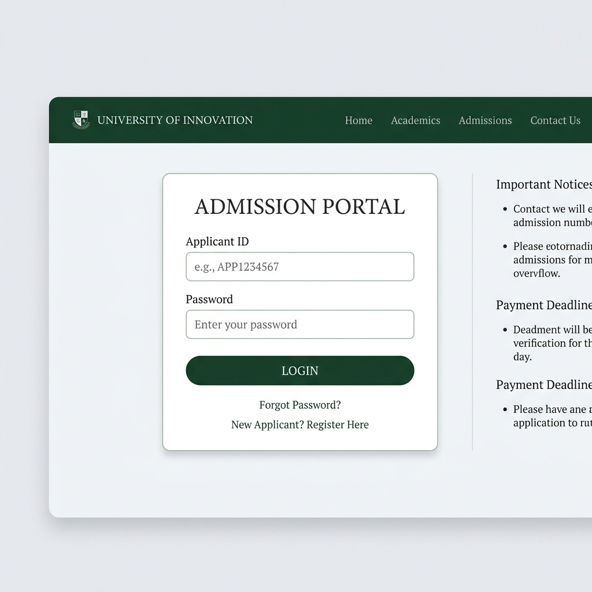

গুগল স্প্রেডশিট ডেটাবেজ, ড্রাইভ অটোমেশন, ওয়ান-ক্লিক ইনিশিয়েলাইজেশন এবং অ্যাডমিট কার্ড জেনারেশন ইমেইল সিস্টেম সম্বলিত রেসপন্সিভ ওয়েব অ্যাপ্লিকেশন।
গুগল অ্যাপস স্ক্রিপ্টের উপর ভিত্তি করে তৈরি একটি উৎপাদন-প্রস্তুত ও নির্ভরযোগ্য অ্যাপ্লিকেশন কাঠামো যা ভর্তি ও নোটিফিকেশন কার্যক্রম সহজ করে দেয়।
পরীক্ষার্থীরা যেন স্মার্টফোন থেকে সহজে ভর্তি আবেদন ও স্ট্যাটাস যাচাই করতে পারেন, তার জন্য সম্পূর্ণ রেসপন্সিভ edge-to-edge লেআউট ডিজাইন করা হয়েছে।
মেনু বারের বিশেষ অটোমেশন ইউটিলিটি ব্যবহার করে স্প্রেডশিটের সবগুলো শীট, কলাম হেডার, কনফিগারেশন ভ্যালু এবং ড্যাশবোর্ড মাত্র এক ক্লিকে স্বয়ংক্রিয়ভাবে তৈরি হয়ে যায়।
ইনপুট স্ক্রিপ্ট ইনজেকশন (XSS) রোধন, ডাবল পেমেন্ট সাবমিশন দমন, প্রবেশপত্র ভিউ এক্সেস শেয়ারিং এবং ড্রাইভে ডক মেমোরি ফাকা করার গ্যারান্টিযুক্ত সেফগার্ডস রয়েছে।
দুর্ঘটনাবশত স্প্রেডশিটের কোনো হেডার কলাম বা ট্যাব মুছে গেলে সিস্টেম অটো-রিকভারি করে এবং পূর্ববর্তী ডাটা অক্ষত রেখে হেডারগুলো সাজিয়ে দেয়।
গুগল স্প্রেডশিটের ব্যাকএন্ড টেবিলগুলোর কলাম এবং ড্যাশবোর্ডের ডিজাইন ও স্ট্রাকচার সরাসরি নিচে দেখুন:
গুগল ড্রাইভে ডাটাবেজ ও কোড কনফিগারেশন সেটআপ করতে নিচের ৪টি ধাপ অনুসরণ করুন:
গুগল ড্রাইভে একটি ফোল্ডার খুলে নতুন স্প্রেডশিট ফাইল তৈরি করুন। স্প্রেডশিটের ভিতরে মেনু বার থেকে অটোমেশন > নতুন ডাটাবেজ প্রস্তুত করুন (Initialize System) এ ক্লিক করুন। সিস্টেম স্বয়ংক্রিয়ভাবে সবগুলো শীট, কলাম হেডার ও ড্যাশবোর্ড গ্রিড প্রস্তুত করবে।
ড্রাইভে প্রবেশপত্রের একটি Google Doc ডিজাইন করুন ও প্রবেশপত্রের পিডিএফ ফাইলগুলো জমা করার জন্য ড্রাইভে একটি ফোল্ডার করুন। গুগলের ডক আইডি এবং ফোল্ডার আইডি কপি করে স্প্রেডশিটের _Configuration শীটের admitCardTemplateId এবং admitCardFolderId কলামে বসিয়ে দিন।
গুগল স্প্রেডশিটের Extensions > Apps Script-এ যান। স্ক্রিপ্ট এডিটরে Code.gs এর পূর্ববর্তী কোড মুছে দিন ও নিচের ৪টি কোড ফাইল এবং ৪টি HTML ফাইল তৈরি করে সোর্স কোডগুলো পেস্ট করে সেভ করুন।
স্প্রেডশিট মেনু থেকে অটোমেশন > অটো-অ্যাকশন চালু করুন (Enable Trigger) এ ক্লিক করে ট্রিগার অন করুন। এরপর স্ক্রিপ্ট এডিটরের উপরে ডানে থাকা Deploy > New deployment এ গিয়ে Deployment type হিসেবে Web app সিলেক্ট করে Deploy করুন। প্রাপ্ত URL-টি হলো আপনার ভর্তি পোর্টাল লিংক।

আপনার গুগল অ্যাপস স্ক্রিপ্ট এডিটর ফাইলের সোর্স কোডগুলো পেতে নিচের ট্যাবগুলোতে ক্লিক করুন:
প্রতি ৩ মাস পর পর নতুন ব্যাচ বা কোর্সের ভর্তি কার্যক্রম শুরু করার সময় নিচের নিয়ম মেনে ডাটাবেজ রিসেট করুন:
File > Download > Microsoft Excel (.xlsx) অপশন থেকে পূর্ববর্তী ব্যাচের ডাটা ডাউনলোড করে ড্রাইভে ব্যাকআপ হিসেবে সেভ করুন।Candidate_Master_List, Payment_Verification_Log, ও Results শীটগুলোর ২ নম্বর রো থেকে নিচের সব ডাটা ডিলিট করে দিন (১ নম্বর রো-এর হেডার অক্ষত রাখবেন)।Candidate_Master_List-এ এবং রেজাল্ট শিট Results-এ ইনপুট করুন। ড্যাশবোর্ড আপডেট করতে মেনু থেকে ড্যাশবোর্ড রিফ্রেশ করুন ক্লিক করুন।ভর্তি পোর্টাল ও অটোমেশন পরিচালনা করতে গিয়ে সাধারণত যে প্রশ্নগুলোর সম্মুখীন হতে পারেন:
ভর্তি পোর্টালটি সম্পূর্ণ মোবাইল-ফার্স্ট ডিজাইন অনুসরণ করে। এটি পরীক্ষার্থীদের জন্য edge-to-edge লেআউট, বড় টাচ বাটন এবং Noto Sans Bengali ফন্টে পরিষ্কার টেক্সট প্রদর্শন করে। নিচে ইন্টারফেস গ্যালারি থেকে মোবাইল স্ক্রিনের ভিজ্যুয়াল লেআউট দেখতে পারেন।
পোর্টালের স্পিড বৃদ্ধির জন্য কনফিগারেশন ডাটা ১ মিনিটের জন্য ক্যাশে রাখা হয়। কনফিগারেশন শীটে কোনো এডিট সম্পন্ন হলে স্ক্রিপ্ট ক্যাশ মেমোরি অটোম্যাটিক খালি করে দেয়, ফলে পোর্টালে নতুন তথ্য সাথে সাথে রিফ্লেক্ট হয়।
পিডিএফ প্রবেশপত্র তৈরির পর স্ক্রিপ্টটি ড্রাইভে কপি করা গুগল ডক টেমপ্লেটটি একটি finally ব্লকের মাধ্যমে স্বয়ংক্রিয়ভাবে ট্র্যাশে পাঠিয়ে দেয়। এটি ড্রাইভে মেমোরি জ্যাম হতে দেয় না। এছাড়া জেনারেট হওয়া পিডিএফটির ভিউ পারমিশন Anyone with link সেট করা হয় যাতে অন্যান্য কো-অর্ডিনেটররা স্প্রেডশিট থেকে সরাসরি এটি ওপেন ও প্রিন্ট করতে পারেন।
গুগল অ্যাপস স্ক্রিপ্ট প্রতিদিন জিমেইল দিয়ে ফ্রি একাউন্টে ১০০টি এবং গুগল ওয়ার্কস্পেস একাউন্টে ১,৫০০টি ইমেইল প্রেরণের সুযোগ দেয়। প্রবেশপত্র প্রেরণের সংখ্যা এর বেশি হলে অনুমোদন প্রক্রিয়াটি ব্যাচ আকারে সম্পন্ন করার পরামর্শ দেওয়া হলো।
ভর্তি পোর্টাল ও অটোমেটেড ড্যাশবোর্ডের মূল ভিজ্যুয়ালসমূহ নিচে দেওয়া হলো: